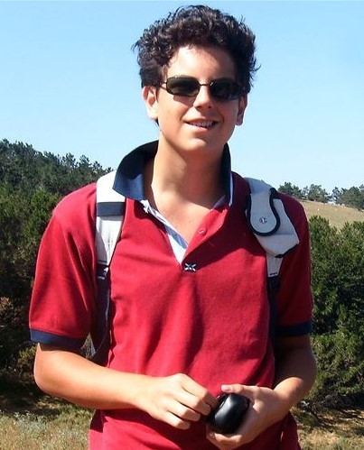
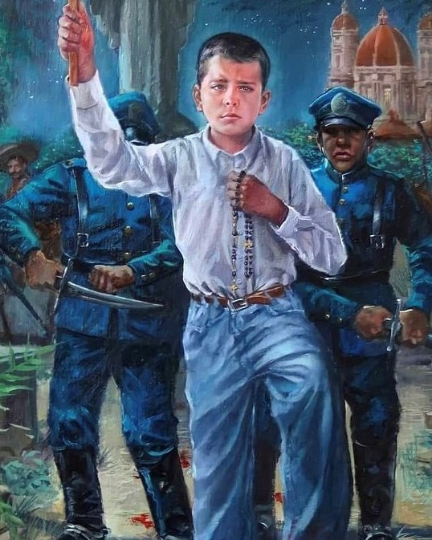
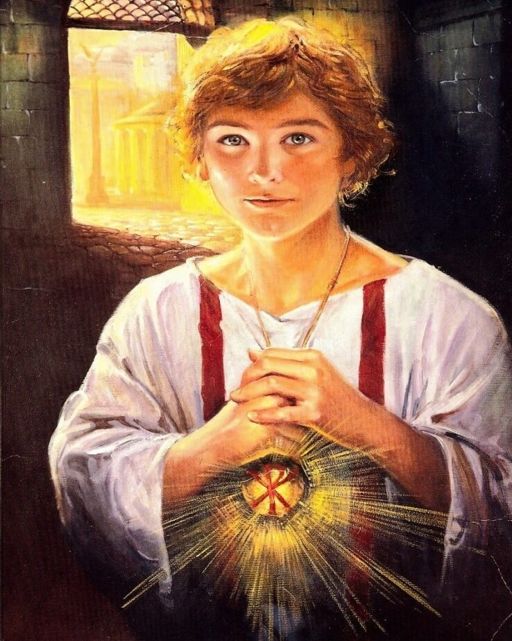
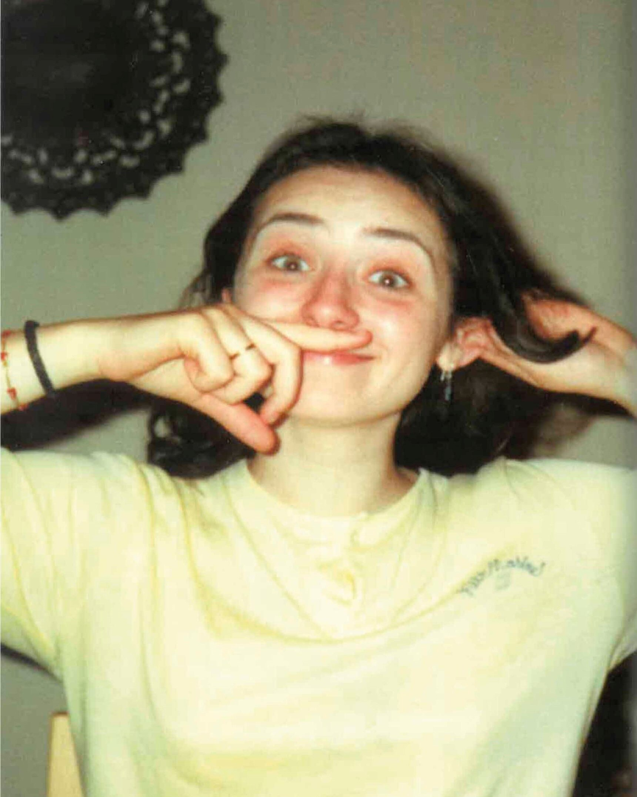
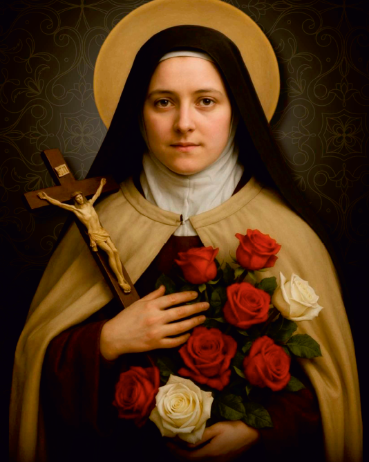

Carlo Acutis

Carlo foi um jovem italiano que usou a tecnologia para divulgar sua fé católica. Morreu aos 15 anos, em 2006, e foi beatificado em 2020, e canonizado em 2025.
José Sánchez

José foi um jovem mexicano, conhecido por sua fé durante a Guerra Cristera, um conflito religioso no México. Mesmo muito novo, decidiu ajudar os católicos que lutavam pela liberdade religiosa. Foi capturado pelas forças do governo e sofreu perseguições por se recusar a negar sua fé.
Tarcísio

Tarcísio foi um jovem cristão dos primeiros séculos da Igreja. Ele ficou conhecido por sua coragem ao levar a Eucaristia escondida para cristãos presos. Durante o caminho, foi atacado por pessoas que queriam que ele entregasse o que carregava. Tarcísio recusou e acabou morrendo, sendo considerado um mártir.
Imelda
Imelda Lambertini foi uma jovem italiana conhecida por sua grande devoção à Eucaristia. Ainda criança, recebeu a comunhão de forma extraordinária e morreu pouco depois, em 1333. Por sua fé, foi beatificada e é lembrada como exemplo de amor a Deus.
Sandra Sabattini

Sandra Sabattini foi uma jovem italiana conhecida por sua fé e dedicação aos pobres e doentes. Participava de obras de caridade e desejava se tornar médica para ajudar ainda mais as pessoas. Morreu em 1984, aos 22 anos, após um acidente. Por sua vida de serviço e amor ao próximo, foi beatificada em 2021.
Joana D’Arc

Joana d'Arc foi uma jovem francesa que liderou tropas na Guerra dos Cem Anos, afirmando agir por inspiração divina. Foi capturada e condenada, sendo morta em 1431. Anos depois, sua história foi reconhecida, e ela foi canonizada em 1920, tornando-se santa da Igreja Católica.
Santa Teresinha

Teresa de Lisieux foi uma jovem francesa conhecida como Santa Teresinha. Viveu uma vida simples em um convento, dedicando-se a Deus com humildade e amor nas pequenas coisas. Morreu aos 24 anos, em 1897, e foi canonizada em 1925. É conhecida pela “pequena via”, que valoriza gestos simples feitos com grande fé.
São Domingos

Domingos Sávio foi um jovem italiano, aluno de Dom Bosco, conhecido por sua pureza e dedicação a Deus desde cedo. Viveu uma vida exemplar mesmo sendo muito jovem e morreu aos 14 anos, em 1857. Foi canonizado em 1954, tornando-se um dos santos mais jovens da Igreja Católica.
Geraldo Majella
Geraldo Majella foi um jovem italiano conhecido por sua humildade, obediência e grande fé. Tornou-se religioso e dedicou sua vida a ajudar os pobres. Morreu em 1755, ainda jovem, e foi canonizado em 1904. É considerado padroeiro das mães e das gestantes.
Antônio de Lisboa
Antônio de Lisboa foi um sacerdote português conhecido por sua sabedoria, pregações e dedicação aos pobres. Tornou-se frade franciscano e ficou famoso por seus ensinamentos e milagres. Morreu em 1231 e foi canonizado pouco tempo depois, em 1232. É muito conhecido como o santo das coisas perdidas.